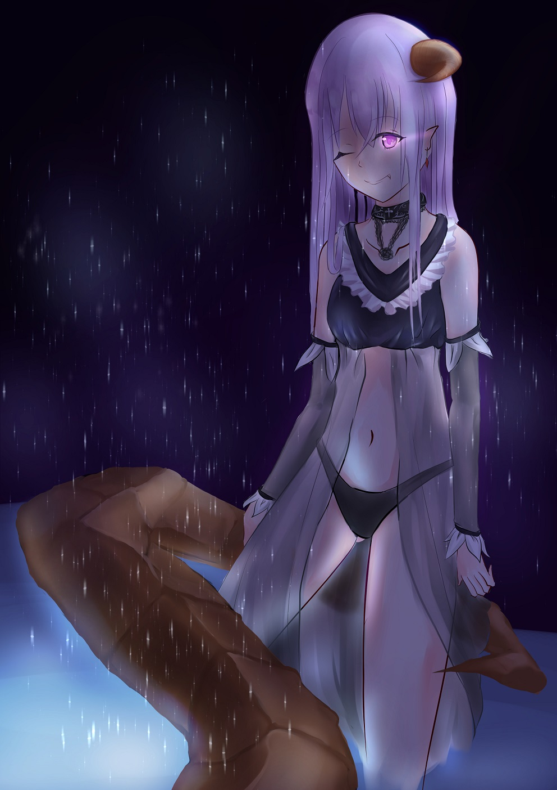

<div id="article_content" class="text-paragraph article_container"><div>(17/3/2更新: 原圖死掉，補上調整過的新版</div><div>總覺得下半身畫得很隨便呢~</div><div>這是計畫中的第二件作品</div><div>也暫定是社刊中的作品(好不容易趕出來的</div><div><br></div><div><br></div><div><font color="#111111"><font size="2">不要逼我畫背景，真的不要，我根本不會RRRRR(HOWHOW口吻</font></font></div><div><br></div><div><br></div><div><br></div><div>還有附上<a href="https://www.facebook.com/Bushyeyebrowscat/" target="_blank">FB</a></div><div>請還不吝賜教~</div><script>
$('article.c-text img').load(function () {
// 表格內圖片大於表格寬時，設為 100%
if ($(this).parents('table').length != 0) {
if ($(this).width() >= $(this).parents('td').width()) {
$(this).width('100%');
} else {
$(this).width($(this).width() + 'px');
}
}
});
</script></div>